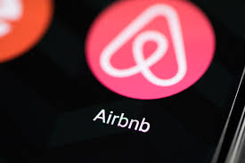

O que é o Airbnb?
O Airbnb é uma plataforma que conecta viajantes em busca de acomodação a pessoas interessadas em alugar seu quarto ou imóvel disponível para obter uma renda extra. Com o uso da tecnologia, milhões de pessoas podem compartilhar seus lares e se beneficiar economicamente de sua hospitalidade. O viajante que escolhe o Airbnb para encontrar um lugar para ficar é aquele que busca mais do que uma viagem econômica, quer experimentar a cidade de forma autêntica, como um morador local, descobrindo bairros e regiões muitas vezes pouco exploradas pelo turismo tradicional. Hoje, uma década depois de sua fundação, o Airbnb registra mais de 400 milhões de chegadas de hóspedes em mais de 81 mil cidades de 191 países. No Brasil, mais de 220 mil anúncios estão disponíveis na plataforma.
Fundadores do Airbnb
Brian Chesky
Brian Joseph Chesky (Nova Iorque, 26 de agosto de 1981) é um empresário bilionário norte-americano e co-fundador do serviço Airbnb. Em 2015, apareceu na lista de 100 pessoas mais influentes do ano pela Time. Chesky se tornou o diretor executivo do Airbnb. Ele solicitou ideias para melhorar a plataforma diretamente dos clientes e implementou ideias com base em suas experiências pessoais como hóspede e anfitrião na empresa.
Nathan Blecharczyk
Nathan Blecharczyk (nascido em 1983) é o cofundador e diretor de estratégia da Airbnb e presidente da Airbnb China. Blecharczyk também foi o primeiro diretor de tecnologia da empresa. Blecharczyk é a 203ª pessoa mais rica do mundo de acordo com a Forbes, com um patrimônio líquido de US$ 9,4 bilhões, principalmente devido à sua propriedade de 62 milhões de ações da Airbnb.

Joe Gebbia

Joseph Gebbia Jr (nascido em 21 de agosto de 1981) é um designer, empresário e cofundador americano da empresa de aluguel de casas Airbnb. Gebbia é a 386ª pessoa mais rica do mundo, de acordo com a Forbes, com um patrimônio líquido de US$ 7,4 bilhões, principalmente devido à sua propriedade de 53 milhões de ações do Airbnb. Em 2022, Gebbia se juntou ao conselho da Tesla Inc. e comprou uma participação minoritária no time de basquete San Antonio Spurs.
História do Airbnb
O Airbnb nasceu em 2007, quando dois anfitriões receberam três hóspedes em sua casa em São Francisco. Hoje, a plataforma conta com 5 milhões de anfitriões que já receberam mais de 1,5 bilhão de hóspedes em quase todos os países do mundo. Todos os dias, os anfitriões oferecem acomodações e experiências únicas que possibilitam que os viajantes conheçam outras comunidades de uma forma mais autêntica. Com o sucesso do pequeno negócio, um amigo de Chesky, Nathan Blecharczyk, se juntou como chefe de tecnologia à administração e à fundação do novo empreendimento, que eles chamaram de AirBed & Breakfast. Juntos, os três montaram um site que oferecia hospedagens de curta duração para aqueles que não conseguiam reservar um hotel.
A plataforma Airbedandbreakfast.com foi lançada oficialmente em agosto de 2008. Em janeiro do ano seguinte, o programador Paul Graham convidou-os para uma sessão de treinamento na sua incubadora de startup, a Y Combinator, o que aprimorou a visão de negócio. A companhia também recebeu um investimento de US$ 20 mil do fundo, quantia que eles utilizaram para voar para Nova York, onde divulgaram o site.
Importância do Airbnb
A empresa Airbnb é um caso recente e expressivo de empreendedorismo que inovou o mercado de locação de acomodações de temporada, com a negociação de serviços associados, por meio de uma plataforma digital de serviços na Internet. Desta forma, ao desempenhar o papel de intermediação de transações entre anfitriões e hóspedes, consolidou um modelo de negócios que se sustentana inovação tecnológica, ganhos financeiros, gestão da informação de seus usuários e relacionamento com stakeholders.
O turismo representa cerca de 10% do PIB mundial e o Airbnb ajuda a assegurar que as pessoas que vivem nas cidades sejam os principais beneficiários dessa atividade econômica. Os comércios dos bairros, que oferecem opções de transportes, alimentação, atividades culturais e lazer também se beneficiam dos visitantes, que acabam gastando nas redondezas de suas acomodações. Uma pesquisa realizada pela Fipe (Fundação Instituto de Pesquisas Econômicas) em 2017 mostrou o impacto econômico desta relação do Airbnb com a comunidade: o Airbnb foi responsável por R$ 2,5 bilhões no PIB nacional em 2016 – um resultado que leva em consideração a renda extra obtida pelos anfitriões brasileiros com o aluguel de temporada e os gastos dos viajantes com alimentação, compras, passeios, atrações e transporte, entre outros.